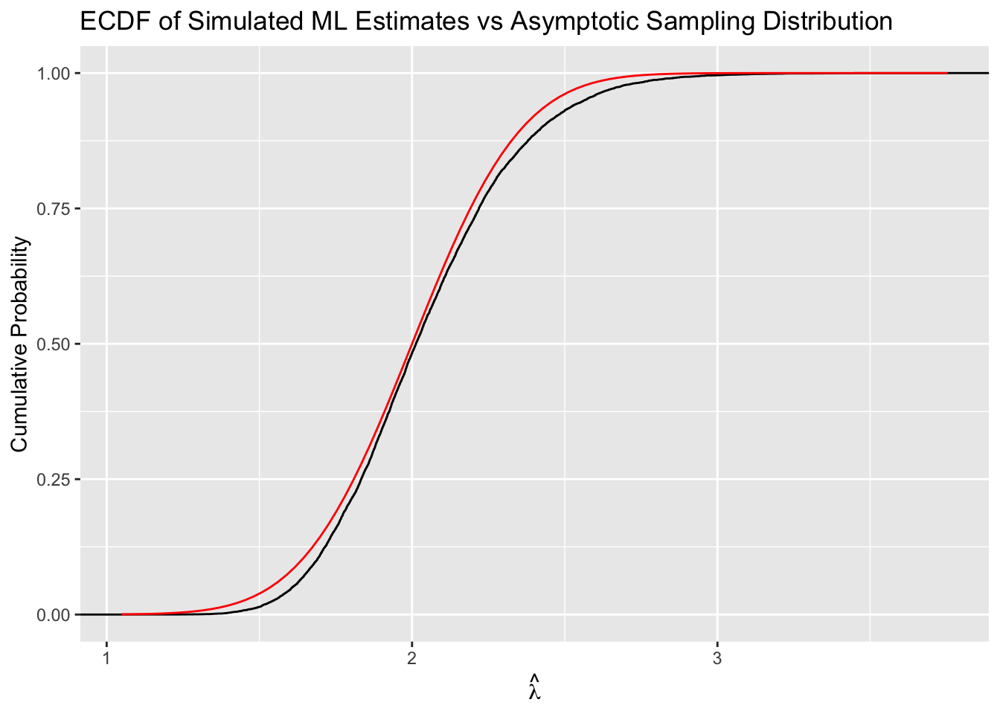

Complete solutions are available. Work each exercise before you open one.
Exercise 1 Mean v. median
Suppose \(y\) follows a normal model with mean \(\mu\) and SD \(\sigma\). Then \(\operatorname{avg}(y)\) is the best unbiased estimator of \(\mu\). But \(\operatorname{median}(y)\) is also an unbiased estimator of \(\mu\). Use a Monte Carlo simulation to show how \(\operatorname{avg}(y)\) is a better estimator of \(\mu\) than \(\operatorname{median}(y)\).
Hint
See Section 4.2 of the notes for the sampling distribution of \(\operatorname{avg}(y)\) under a normal model, and Section 4.1 for simulating a sampling distribution.
Complete solution
The average is better because the SE of the average estimator is smaller than the SE of the median estimator.
# parametersmu <-0sigma <-1N <-10# sample size of yn_mc_sims <-10000# monte carlo repetitions# containersmean_hat <-numeric(n_mc_sims)median_hat <-numeric(n_mc_sims)# simulate many data sets y; compute and store estimates for eachfor (i in1:n_mc_sims) { y <-rnorm(N, mean = mu, sd = sigma) mean_hat[i] <-mean(y) median_hat[i] <-median(y)}sd(mean_hat) # se of avg estimator
[1] 0.3131982
sd(median_hat) # se of median estimator
[1] 0.3683569
Exercise 2 Asymptotics as approximations
For a large number of repetitions, do the following:
Simulate a data set \(y\) with \(N = 50\) observations from the exponential distribution with \(\lambda = 2\).
Compute the point estimate \(\hat{\lambda} = \frac{1}{\text{avg}(y)}\). Store this point estimate.
Compare the mean and SD of the simulated point estimates to the theoretical mean and SD of the asymptotic sampling distribution. We care, of course, about the actual sampling distribution, but we have to use an asymptotic approximation in practice. Discuss the differences and whether they seem important or unimportant.
Optional: Go beyond the mean and SD. Use a table of quantiles of the simulated point estimates and theoretical distribution and/or plots of the CDFs to compare the simulated (i.e., actual) and theoretical distributions.
Hint 1
See Section 6.2 of the notes for the asymptotic normal approximation, including the callout there on treating asymptotic results as approximations. Section 4.4.2 simulates the actual sampling distribution of \(\hat{\lambda}\).
Hint 2
For the exponential model, the asymptotic sampling distribution of \(\hat{\lambda}\) is \(\hat{\lambda} \overset{a}{\sim} N\left(\lambda,\; \frac{\lambda^2}{N}\right)\).
Complete solution
Solution
# load packageslibrary(tinytable)options(tinytable_tt_digits =3)options(tinytable_latex_placement ="H")# set seed for reproducibilityset.seed(1234)# parameterslambda <-2N <-50# sample sizeR <-10000# number of mc repetitions# looplambda_hat <-numeric(R) # container to store resultsfor (i in1:R) { y <-rexp(N, rate = lambda) # simulate data set lambda_hat[i] <-1/mean(y) # compute and store estimate}# empirical summariesemp_mean <-mean(lambda_hat)emp_sd <-sd(lambda_hat)# asymptoticasy_mean <- lambdaasy_sd <-sqrt(lambda^2/ N)# data frame of resultsres <-data.frame(Statistic =c("Mean", "SD"),Empirical =c(emp_mean, emp_sd),Asymptotic =c(asy_mean, asy_sd))# print tablett( res,digits =3, align ="lrr",)
Statistic
Empirical
Asymptotic
Mean
2.04
2
SD
0.293
0.283
# quantile comparison tableprobs <-c(0.01, 0.05, 0.10, 0.25, 0.50, 0.75, 0.90, 0.95, 0.99)emp_q <-quantile(lambda_hat, probs = probs)asy_q <-qnorm(probs, mean = asy_mean, sd = asy_sd)# combine into data framequant <-data.frame(p = probs,empirical = emp_q,asymptotic = asy_q,difference = emp_q - asy_q)# make tablett( quant,digits =3, # 3 decimals for numbersalign ="lrr",)
p
empirical
asymptotic
difference
0.01
1.47
1.34
0.1302
0.05
1.61
1.53
0.073
0.1
1.69
1.64
0.0503
0.25
1.83
1.81
0.0242
0.5
2.01
2
0.013
0.75
2.22
2.19
0.028
0.9
2.43
2.36
0.0628
0.95
2.56
2.47
0.0995
0.99
2.83
2.66
0.176
# load packageslibrary(tidyverse)# plot ecdf and asymptotic distributiongg_data <-data.frame(lambda_hat = lambda_hat)ggplot(gg_data, aes(x = lambda_hat)) +stat_ecdf() +stat_function(fun =function(x) pnorm(x, mean = asy_mean, sd = asy_sd), color ="red") +labs(title ="ECDF of Simulated ML Estimates vs Asymptotic Sampling Distribution",x =expression(hat(lambda)),y ="Cumulative Probability" )

Discussion
Center (bias). The empirical mean of \(\hat{\lambda}\) is about 2.04, compared to the true \(\lambda=2.000\). This is a difference of roughly 2%. At \(N=50\), this upward bias is present but quite small.
Spread. The empirical SD is about 0.293, while the asymptotic SD is 0.283. This difference is 3.7% of the asymptotic value, so the asymptotic variance formula provides an accurate description of variability.
Quantiles and tails. For the median, the empirical value is 2.013 compared to an asymptotic prediction of 2. At the 1% and 99% quantiles, the differences are about 0.13 and 0.176, respectively, which correspond to differences of only a few percent relative to the true scale. The ECDF and normal CDF curves are nearly indistinguishable except in the tails.
Bottom line. With \(N=50\), the asymptotic normal distribution closely matches the finite-sample distribution of \(\hat{\lambda}\). The bias is about 2%, the SD differs by about 4%, and quantile differences are small. The asymptotic normal approximation is accurate and reliable for practical use at this sample size.
Exercise 3 German Tank Problem
Suppose a discrete uniform distribution from 0 to \(K\). The pmf is \(f(x; K) = \frac{1}{K + 1}, \quad x \in \{0, 1, \ldots, K\}\). The ML estimator is \(\hat K = \max(y)\). The method of moments estimator is \(\hat K = 2 \times \operatorname{avg}(y)\). Use a Monte Carlo simulation to evaluate bias and variance of each estimator for a small (\(N = 3\)), medium (\(N = 25\)), and large sample size (\(N = 1,000\)). Which estimator do you recommend?
Note: This model violates several of the regularity conditions, so the usual asymptotic guarantees do not hold.
Exercise 1 similarly compares two estimators. However, the mean and median are both unbiased in that case, so only the variance matters.
Complete solution
Solution
# load packageslibrary(tinytable)library(dplyr)options(tinytable_tt_digits =3)options(tinytable_latex_placement ="H")# set seed for reproducibilityset.seed(1234)# parametersK <-100# true KNs <-c(3, 25, 1000) # sample sizesR <-10000# number of mc repetitions# container: list of data framesres_list <-list()# loop over sample sizesfor (N in Ns) { K_hat_mle <-numeric(R) # container for MLE K_hat_mom <-numeric(R) # container for MOMfor (i in1:R) { y <-sample(0:K, N, replace =TRUE) # simulate data set K_hat_mle[i] <-max(y) # MLE K_hat_mom[i] <-2*mean(y) # MOM }# empirical summaries emp_mean_mle <-mean(K_hat_mle) emp_sd_mle <-sd(K_hat_mle) emp_mean_mom <-mean(K_hat_mom) emp_sd_mom <-sd(K_hat_mom)# store results for this N res_list[[as.character(N)]] <-data.frame(N = N,Estimator =c("MLE", "MOM"),Mean =c(emp_mean_mle, emp_mean_mom),SD =c(emp_sd_mle, emp_sd_mom),Bias =c(emp_mean_mle - K, emp_mean_mom - K),MSE =c(mean((K_hat_mle - K)^2), mean((K_hat_mom - K)^2)) )}# combine all into one data frameres <-bind_rows(res_list)# print tablett( res,digits =5,align ="lrrrrr",)
N
Estimator
Mean
SD
Bias
MSE
3
MLE
75.055
19.7364
-24.9454
1011.7588
3
MOM
99.952
33.59
-0.048467
1128.1803
25
MLE
96.665
3.6737
-3.3353
24.6191
25
MOM
100.191
11.7466
0.191144
138.0057
1000
MLE
100
0
0
0
1000
MOM
99.993
1.8362
-0.007073
3.3712
Notice that the ML estimator is severely biased downward in small samples. But it also has a much smaller variance. It’s not clear how to trade off these two. However, it’s worth noting that the severely biased ML estimator has a smaller mean-squared error.
Which estimator do you recommend? There isn’t an easy right answer here, just make an argument for one or the other from principles (e.g., bias, variance, MSE, or others).
Exercise 4 Jensen’s Inequality
Suppose the usual exponential model. The ML estimate of the rate \(\lambda\) is \(\hat{\lambda} = \frac{1}{\text{avg}(y)}\). Using the invariance property, the ML estimate of the mean \(\frac{1}{\lambda}\) is \(\hat{\mu} = \frac{1}{\hat{\lambda}}\). Show analytically that the ML estimate of the mean is unbiased, while the ML estimate of the rate is biased.
Jensen’s Inequality. If \(g\) is a convex function and \(X\) is a random variable with \(\mathbb E[X]\) finite, then \(\mathbb E\big[g(X)\big] \ge g \big(\mathbb E[X]\big)\), with strict inequality unless \(X\) is degenerate (i.e., constant almost surely).
First show that \(\hat{\mu}\) is unbiased. Then use Jensen’s inequality to show that \(\hat{\lambda}\) is biased upward. You do not need to find the size of the bias, just use Jensen’s inequality to show that the ML estimate of the rate is biased. To use Jensen’s inequality, let \(g(x)=1/x\), and notice that \(g(x)\) is convex on \((0,\infty)\) (since \(g''(x)=2/x^3>0\)).
Complete solution
Solution
1) Unbiasedness of the ML estimate of the mean
\(\hat{\mu} = \text{avg}(y) = \frac{1}{N} \sum_{i = 1}^N y_i\) is the sample mean of iid observations. \(\mathbb E[y_i]=\frac{1}{\lambda}\). Then
Because \(\mathbb E(\hat\mu) = \mu\), \(\hat{\mu}\) is an unbiased estimate of the mean.
2) Bias of the ML estimate of the rate
\(\hat{\lambda} = \dfrac{1}{\text{avg}(y)} = \left(\dfrac{1}{N}\sum_{i=1}^N y_i\right)^{-1}\). Let \(g(x)=1/x\), and notice that \(g(x)\) is convex on \((0,\infty)\) (since \(g''(x)=2/x^3>0\)). Then
\[
\begin{aligned}
\mathbb E[\hat{\lambda}]
&= \mathbb E\left[ \frac{1}{\text{avg}(y)} \right] && \text{(definition of $\hat{\lambda}$)}\\
&= \mathbb E\left[g\big(\text{avg}(y)\big)\right] && \text{(definition of $g$ above)}\\
&> g\big(\mathbb E[\text{avg}(y)]\big) && \text{(Jensen's inequality, $g$ convex)}\\
&= \frac{1}{\mathbb E[\text{avg}(y)]} && \text{(apply $g$)}\\
&= \frac{1}{\frac{1}{N}\sum_{i=1}^N \mathbb E(y_i)} && \text{(linearity of expectation)}\\
&= \frac{1}{\frac{1}{N}\sum_{i=1}^N \frac{1}{\lambda}} && \text{(each $y_i$ has mean $1/\lambda$)}\\
&= \frac{1}{\frac{1}{N}\cdot N \cdot \frac{1}{\lambda}} && \text{(sum of $N$ identical terms)}\\
&= \lambda && \text{(simplify)}
\end{aligned}
\]
Since the inequality is strict for finite \(N\) (the distribution of \(\text{avg}(y)\) is non-degenerate), \(\mathbb E[\hat{\lambda}] > \lambda\). Thus, the ML estimate of the rate is biased upward.
Exercise 5 Poisson
Suppose a Poisson model. The ML estimate of the mean parameter \(\lambda\) is \(\hat\lambda = \text{avg}(y)\). Find an estimate of the SE using the observed Fisher information.
Hint
See Section 6.2 of the notes for the four steps that turn the log-likelihood into an SE estimate, and Section 6.6 for those steps worked out for the exponential model.
Complete solution
Solution
The log-likelihood is \(\ell(\lambda) = \sum_{i=1}^N \big[y_i \log \lambda - \lambda - \log(y_i!)\big]\).
First, find the second derivative with respect to \(\lambda\).
The code below loads the number of enforcement operations for each district in Bogota from Holland (2015) from the {crdata} package. See ?crdata::holland2015 for details.
# load holland2015 data set from crdata packageholland2015 <- crdata::holland2015 # get operations in bogota onlyops <- holland2015$operations[holland2015$city =="bogota"]# printops
[1] 15 10 15 20 8 4 8 16 4 28 2 8 4 4 4 4 8 3 4
A Poisson model.
Task: Using the Poisson estimators from Exercise 5, find the ML estimate and SE estimate of \(\lambda\) for a Poisson model.
But before moving on, compare the SD of the predictive distribution (no need to simulate, it depends only and directly on \(\lambda\)) and the SD of the data. Why might this be a problem for the SE estimate?
Hint
See Section 3.1 of the notes for the predictive distribution of a Poisson model. Section A.5 gives its SD.
Complete solution
Solution.
First, fit the Poisson model and compute the ML estimate and SE of \(\lambda\) without using optim(), following the observed-information derivation above.
# load packageslibrary(tidyverse)library(tinytable)# load holland2015 data set from crdata packageholland2015 <- crdata::holland2015 # get operations in bogota onlyops <- holland2015$operations[holland2015$city =="bogota"]# estimate lambda with mlN <-length(ops)lambda_hat_pois <-mean(ops); lambda_hat_pois
# compare predictive SD to data SDsd_pred_pois <-sqrt(lambda_hat_pois) # predictive SD under Poissonsd_data <-sd(ops) # empirical SD# summarize results in a small tableres_pois <-data.frame(Statistic =c("Predictive SD ", "Data SD"),Value =c(sd_pred_pois, sd_data))tt(res_pois, digits =3, align ="lr")
Statistic
Value
Predictive SD
2.98
Data SD
6.94
This poses a big problem for our SE estimate. The SE estimate depends on the variance. If the variance is wildly underestimated, the the SE will be wildly underestimated as well.
Exercise 7 Exponential
Suppose an exponential model of \(y\). We know that the ML estimate of the rate \(\lambda\) is \(\hat \lambda = \frac{1}{\operatorname{avg}(y)}\). By the invariance property, the ML estimate of the mean \(\mu = \frac{1}{\lambda}\) is \(\hat \mu = \frac{1}{\hat \lambda}\).
Use the observed Fisher information to find a closed-form estimate of the SE of \(\hat \lambda\).
Then use the delta method to find a closed-form estimate of the SE of \(\hat \mu\).
Hint 1
See Section 6.6 of the notes for the first part and Section 7.2 for the delta method with one parameter.
Hint 2
For an exponential model with rate \(\lambda\), the density is \(f(y; \lambda) = \lambda e^{-\lambda y}\), so \(\ell(\lambda) = \sum \big(\log \lambda - \lambda y_i\big)\).
Complete solution
Solution
The log-likelihood is \[
\ell(\lambda) \;=\; \sum_{i=1}^N \big[\log \lambda \;-\; \lambda y_i\big].
\]
First, find the second derivative with respect to \(\lambda\).
The observed Fisher information is \[
\mathcal I_{\text{obs}}(\lambda)
= -\frac{\partial^2 \ell}{\partial \lambda^2}
= \frac{N}{\lambda^2}.
\]
To find the estimate of the SE, replace \(\lambda\) with \(\hat\lambda\): \[
\widehat{\operatorname{SE}}(\hat\lambda)
= \sqrt{\mathcal I_{\text{obs}}(\hat\lambda)^{-1}}
= \sqrt{\frac{\hat\lambda^{2}}{N}}
= \frac{\hat\lambda}{\sqrt{N}}
= \frac{1}{\sqrt{N}\,\operatorname{avg}(y)}.
\]
Now suppose we use the invariance property to obtain \(\hat\mu = \dfrac{1}{\hat\lambda}\). Then we can use the delta method to estimate the SE with \(\tau(\lambda) = \dfrac{1}{\lambda}\).
The first derivative is \(\tau'(\lambda) = -\frac{1}{\lambda^2}\).
Plugging in, we have \[
\begin{aligned}
\widehat{\operatorname{Var}}(\hat\mu)
&\approx \big[\tau'(\hat\lambda)\big]^2 \cdot \widehat{\operatorname{Var}}(\hat\lambda)
\;=\; \left(\frac{1}{\hat\lambda^2}\right)^2 \cdot \frac{\hat\lambda^{2}}{N} \\[6pt]
&= \frac{1}{N\,\hat\lambda^{2}}.
\end{aligned}
\]
And the standard error is \[
\widehat{\mathrm{SE}}(\hat\mu)
\;\approx\; \sqrt{\frac{1}{N\,\hat\lambda^{2}}}
\;=\; \frac{1}{\sqrt{N}\,\hat\lambda}
\;=\; \frac{\operatorname{avg}(y)}{\sqrt{N}}.
\]
Exercise 8 Delta method, by hand
Suppose you obtain the ML estimate \(\hat\theta=(\hat a,\hat b)=(2,\,1)\) with an estimated covariance matrix of \[
\widehat{\mathrm{Var}}(\hat\theta)
=
\widehat{\mathrm{Var}}(\hat a,\hat b)
=
\begin{bmatrix}
1 & \tfrac{1}{2}\\[2pt]
\tfrac{1}{2} & 1
\end{bmatrix}.
\]
However, you want to estimate the quantity of interest \(q = \tau(a,b)=\dfrac{a}{b}\). Find \(\hat q\) using the invariance property and estimate the SE of \(\hat q\) using the delta method. (Find the gradient analytically.) Confirm your work with R.
Model the proportion of the voting-eligible population that voted using a beta distribution. Estimate the parameters of the beta distribution \(\alpha\) and \(\beta\) as well as the mean \(\mu = \frac{\alpha}{\alpha + \beta}\) and the SD \(\sigma = \sqrt{\frac{\alpha \beta}{(\alpha + \beta)^2 (\alpha + \beta + 1)}}\). Use a parametric bootstrap to estimate the SE of each.
Fitting a beta model with optim() 1,000s of times might lead to a convergence error in a couple of fits. These might be important, but for the sake of this exercise we can ignore them.
Complete solution
Solution
# load packageslibrary(tidyverse)library(tinytable)# load data as tibble turnout_2024 <-tribble(~state, ~vep_turnout,"Alabama", 0.5893,"Alaska", 0.6378,"Arizona", 0.6360,"Arkansas", 0.5348,"California", 0.6206,"Colorado", 0.7314,"Connecticut", 0.6708,"Delaware", 0.6702,"District of Columbia", 0.6357,"Florida", 0.6671,"Georgia", 0.6826,"Hawaii", 0.5027,"Idaho", 0.6344,"Illinois", 0.6325,"Indiana", 0.5869,"Iowa", 0.7078,"Kansas", 0.6318,"Kentucky", 0.6219,"Louisiana", 0.6077,"Maine", 0.7424,"Maryland", 0.6930,"Massachusetts", 0.6803,"Michigan", 0.7464,"Minnesota", 0.7635,"Mississippi", 0.5745,"Missouri", 0.6434,"Montana", 0.6820,"Nebraska", 0.6796,"Nevada", 0.6580,"New Hampshire", 0.7405,"New Jersey", 0.6724,"New Mexico", 0.5957,"New York", 0.6044,"North Carolina", 0.7032,"North Dakota", 0.6310,"Ohio", 0.6539,"Oklahoma", 0.5328,"Oregon", 0.7194,"Pennsylvania", 0.7143,"Rhode Island", 0.6328,"South Carolina", 0.6214,"South Dakota", 0.6400,"Tennessee", 0.5761,"Texas", 0.5657,"Utah", 0.6415,"Vermont", 0.7089,"Virginia", 0.7119,"Washington", 0.7017,"West Virginia", 0.5546,"Wisconsin", 0.7664,"Wyoming", 0.6128)# beta log-likelihoodbeta_ll_fn <-function(theta, y) { alpha <- theta[1] beta <- theta[2] ll <-sum(dbeta(y, shape1 = alpha, shape2 = beta, log =TRUE))return(ll)}# create a function to fit the beta modelest_beta <-function(y) { est <-optim(par =c(3, 3), fn = beta_ll_fn, y = y,control =list(fnscale =-1),method ="BFGS") # for >1d problemsif (est$convergence !=0) print("Model did not converge!") res <-list(est = est$par)return(res)}# ml estimatesml_est <-est_beta(turnout_2024$vep_turnout)a <- ml_est$est[1]; a # alpha
[1] 39.59784
b <- ml_est$est[2]; b # beta
[1] 21.29332
a / (a + b) # mean; using a and b for readability
[1] 0.6503053
sqrt( (a * b) / ((a + b)^2* (a + b +1)) ) # SD
[1] 0.06061623
# parametric bootstrapn_bs <-100bs_alpha_hat <- bs_beta_hat <- bs_mu_hat <- bs_sigma_hat <-numeric(n_bs) # containers for the estimatesfor (i in1:n_bs) {# bootstrap sample bs_y <-rbeta(length(turnout_2024$vep_turnout), shape1 = ml_est$est[1], shape2 = ml_est$est[2])# fit model to bootstrapped sample bs_est <-est_beta(bs_y)# store ml estimates of alpha and beta for readability below bs_a <- bs_est$est[1] bs_b <- bs_est$est[2]# compute and store all qis bs_alpha_hat[i] <- bs_a bs_beta_hat[i] <- bs_b bs_mu_hat[i] <- bs_a / (bs_a + bs_b) bs_sigma_hat[i] <-sqrt( (bs_a * bs_b) / ((bs_a + bs_b)^2* (bs_a + bs_b +1)) )}
[1] "Model did not converge!"
# bootstrap SEsbs_se_alpha_hat <-sd(bs_alpha_hat)bs_se_beta_hat <-sd(bs_beta_hat)bs_se_mu_hat <-sd(bs_mu_hat)bs_se_sigma_hat <-sd(bs_sigma_hat)# tinytable (avoid underscores in visible labels)tab_df <- tibble::tibble(Parameter =c("$\\alpha$", "$\\beta$", "$\\mu$", "$\\sigma$"),`ML estimate`=c(a_hat = a, b_hat = b, mu_hat = a / (a + b), sigma_hat =sqrt( (a * b) / ((a + b)^2* (a + b +1)) )),`Bootstrap SE`=c(bs_se_alpha_hat, bs_se_beta_hat, bs_se_mu_hat, bs_se_sigma_hat))tt( tab_df,digits =3,caption ="Beta model: ML estimates and parametric-bootstrap standard errors.",)
Beta model: ML estimates and parametric-bootstrap standard errors.
Parameter
ML estimate
Bootstrap SE
$\alpha$
39.5978
7.99754
$\beta$
21.2933
4.36365
$\mu$
0.6503
0.00827
$\sigma$
0.0606
0.00547
Exercise 10 Turnout rates, part 2
Estimate the SEs of \(\hat{\mu}\) numerically (i.e., using optim() with hessian = TRUE combined with the delta method with numDeriv::grad()). Compare to the results from the parametric bootstrap in part 1.
Hint 1
See Section 6.7 of the notes for \(\widehat{\operatorname{Var}}(\hat\theta)\) from optim(), and Section 7.3.4 for the numerical gradient.
Hint 2
This is like Exercise 8, except that \(\widehat{\operatorname{Var}}(\hat\theta)\) is computed by optim() rather than given in the text of the question..
In Exercise 5, you found the observed information for a single parameter. Here, the observed information is a \(2 \times 2\) matrix.
Complete solution
Solution
First, find the variance matrix estimate with optim().
library(numDeriv) # for numerical gradients# refit the model, this time keeping the hessian# (turnout_2024 and beta_ll_fn come from part 1)est <-optim(par =c(3, 3), fn = beta_ll_fn, y = turnout_2024$vep_turnout,control =list(fnscale =-1),method ="BFGS",hessian =TRUE)theta_hat <- est$par # c(alpha_hat, beta_hat)info_obs <--est$hessian # observed information (note the negative)var_hat <-solve(info_obs) # estimated covariance matrix of theta_hattheta_hat
sqrt(diag(var_hat)) # ses of alpha_hat and beta_hat
[1] 7.829150 4.187191
Now use the delta method to convert the variance (matrix) estimates of \((\hat{alpha}, \hat{\beta})\) to an estimate of the variance of \(\hat{\mu}\).
The quantity of interest is \(\mu = \tau(\alpha, \beta) = \frac{\alpha}{\alpha + \beta}\).
The delta method is \(\widehat{\operatorname{Var}}[\tau(\hat\theta)] \approx \nabla\tau(\hat\theta)^\top \widehat{\operatorname{Var}}(\hat\theta) \nabla\tau(\hat\theta)\).
We could differentiate \(\tau()\) by hand here, but numDeriv::grad() can do it numerically and that’s what the question asks us to do!
# the quantity of interest as a function of thetamu_fn <-function(theta) { a <- theta[1] b <- theta[2] a / (a + b)}# numerical gradient of tau() evaluated at theta_hatgrad_mu <-grad(func = mu_fn, x = theta_hat)grad_mu
Now compare the two of SEs for \(\hat{\mu}\). (bs_se_mu_hat is the bootstrap SE computed in part 1.)
# tinytable (avoid underscores in visible labels)compare_df <- tibble::tibble(Parameter =c("$\\mu$"),`Bootstrap SE`=c(bs_se_mu_hat),`Delta method SE`=c(se_mu_hat))tt( compare_df,digits =3,caption ="Beta model: parametric-bootstrap and delta-method SEs compared",)
Beta model: parametric-bootstrap and delta-method SEs compared
Parameter
Bootstrap SE
Delta method SE
$\mu$
0.00827
0.00849
Exercise 11 Two CIs
Consider a simple Bernoulli model for \(y \in \{0,1\}\) with parameter \(\pi \in [0,1]\). Create a small sample with a rare event: take \(N = 20\) trials with exactly one success.
Part 1.Wald confidence interval.
Compute the ML estimate \(\hat \pi = \operatorname{avg}(y)\), the Wald SE \(\widehat{\mathrm{SE}}(\hat \pi) = \sqrt{\hat \pi(1-\hat \pi)/N}\), and the usual \(95\%\) Wald confidence interval \(\hat \pi \pm 1.96 \cdot\widehat{\mathrm{SE}}(\hat \pi)\). What do you notice about the interval relative to the parameter space \([0,1]\)?
Part 2.Parametric bootstrap confidence interval.
Use a parametric bootstrap to obtain a \(95\%\) percentile confidence interval for \(\pi\) based on the fitted model \(\text{Bernoulli}(\hat \pi)\). Compare the bootstrap interval with the Wald interval. What stands out? Briefly explain.
Hint 1
See Section 6.5 of the notes for the Wald interval and Section 5.1 for a bootstrap percentile interval on a Bernoulli model.
Hint 2
This is like the parametric bootstrap from Exercise 9. Repeatedly simulate \(y^{*(b)}_1,\dots,y^{*(b)}_N \stackrel{iid}{\sim} \text{Bernoulli}(\hat \pi)\), recompute \(\hat \pi^{*(b)} = \operatorname{avg}(y^{*(b)})\), and then take the empirical \(2.5^\text{th}\) and \(97.5^\text{th}\) percentiles of \(\{\hat \pi^{*(b)}\}\).
Complete solution
Solution.
set.seed(1)# data: N = 20 with exactly one successN <-20y <-c(1, rep(0, N -1)) # rare event sampley <-sample(y) # shuffle (irrelevant, but tidy)# ml estimate and wald 95%cipi_hat <-mean(y)se <-sqrt(pi_hat * (1- pi_hat) / N)wald_ci <- pi_hat +c(-1, 1) *1.96* sepi_hat
[1] 0.05
se
[1] 0.04873397
wald_ci
[1] -0.04551858 0.14551858
The Wald interval extends below 0, which is outside the parameter space \([0,1]\).
# parametric bootstrap w/ percentile 95% cin_bs <-2000bs_est <-numeric(n_bs) # a container for the estimatesfor (i in1:n_bs) { bs_y <-rbinom(20, size =1, prob = pi_hat) bs_est[i] <-mean(bs_y)}print(quantile(bs_est, probs =c(0.025, 0.975)), digits =2) # 95% ci
2.5% 97.5%
0.00 0.15
The Wald interval uses a normal approximation centered at \(\hat \pi\) with variance estimated by Fisher information. With extreme \(\hat \pi\) near zero and small \(N\), this approximation is poor and the lower bound of the CI can dip below 0. In contrast, the parametric bootstrap respects the model’s support by construction (every \(\hat \pi^{*(b)} \in [0,1]\)), so the percentile interval stays within \([0,1]\) and typically provides more reasonable coverage in this setting.
Footnotes
Rather than “approximately equals” (\(\approx\)), it’s more technically correct to write “asymptotically equals.” However, we treat “asymptotically equals” to mean “approximately” in practice. Given the practical orientation of the course, it seems better to write “approximately” here.↩︎